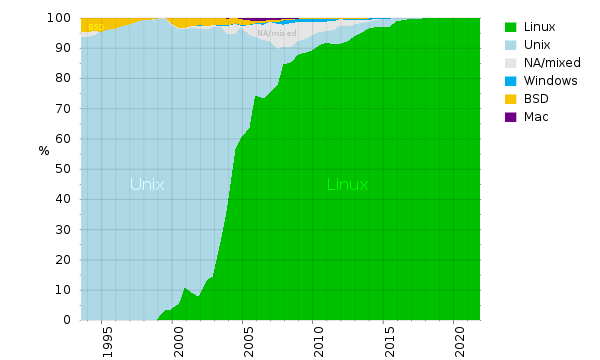

Известно ли вам, какие компьютеры называются суперкомпьютерами? Знаете ли вы, что всего 10–15 лет назад мощность суперкомпьютеров была такая же, как у современного смартфона? Можете ли представить себе, какие размеры имеют суперкомпьютеры и сколько они весят? Обо всем этом и о многом другом, связанном с современными задачами, решаемыми с помощью суперкомпьютера, вы узнаете из видеолекции профессора Воеводина Владимира Валентиновича, заместителя директора НИВЦ МГУ, заведующего кафедрой суперкомпьютеров и квантовой информатики ВМК МГУ, член-корреспондента РАН, доктора физико-математических наук.
В первой части видеолекции лектор знакомит нас с таким классом компьютеров как суперкомпьютеры. Из увлекательного рассказа Владимира Валентиновича вы узнаете, чем отличаются суперкомпьютеры от обычных компьютеров и для чего они предназначены, можно ли обойтись без суперкомпьютеров и какие задачи решают на них.
Аудио формат
Видео формат
Top500
Top500 — проект по составлению рейтинга и описаний 500 самых мощных общественно известных вычислительных систем мира. Проект был запущен в 1993 году и публикует актуальный перечень суперкомпьютеров дважды в год (в июне и ноябре). Этот проект направлен на обеспечение надёжной основы для выявления и отслеживания тенденций в области высокопроизводительных вычислений. Основой для рейтинга являются результаты исполнения испытания LINPACK (HPL), решающего большие плотные СЛАУ С июня 2022 года лидером рейтинга является американский суперкомпьютер Frontier.Отраслевые издания сообщают, что суперкомпьютеры коммерческого и секретного предназначения могут отсутствовать в рейтинге Top500, так как участие в рейтинге Top500 является добровольным
Статистика
По данным на ноябрь 2022 года по числу систем в рейтинге страны распределяются так: Китай — 162 суперкомпьютера, США — 127, Германия — 34, Япония — 31, Франция — 24, Великобритания — 15, Канада — 10, Южная Корея — 8, Нидерланды — 8, Бразилия — 8, Италия — 7, Россия — 7. С ноября 2015 года в рейтинге больше нет ни одного суперкомпьютера под управлением операционной системы Windows. Также среди мощнейших суперкомпьютеров нет ни одной машины под управлением Mac OS. Большинство ЭВМ, до середины 2000-х годов было под управлением UNIX, а сейчас под управлением операционной системы Linux.

История проектов
В начале 1990-х годов возникла необходимость получения сравнительных характеристик и метрик суперкомпьютеров. После рейтингов 1986—1992 годов с метриками, основанными на количестве векторных процессоров, в университете Мангейма у Erich Strohmaier и Hans Werner Meuer возникла идея начать ежегодно сравнивать суперкомпьютеры при помощи единой методики
В начале 1993 года Джек Донгарра принял участие в этом проекте со своим тестом Linpack. Первая версия списка была готова в мае 1993 года. Она частично была основана на данных, доступных в сети, включая данные источники:
Статистика по суперкомпьютерам Мангейма
Список самых мощных мировых вычислительных узлов, обновляемый Гюнтером Арендтом
Информация от Дэвида Кехнера.
Информация из этих источников использовалась для создания первых двух списков Top500.
С июня 1993 года Top500 составляется два раза в год и основывается только на информации от организаций, в которых установлены компьютеры, и от производителей. Запрос информации рассылается за 8 недель до выхода новой версии списка
В 2013 году Джек Донгарра предложил новый тест для ранжирования суперкомпьютеров, High Performance Conjugate Gradient (HPCG).В июне 2014 был опубликован первый рейтинг на базе HPCG, первое место в котором занял Тяньхэ-2 с результатом в 0,58 HPCG PFLOPS (при 55 теоретических пиковых PFLOPS) Другой альтернативный тест — HPGMG
Статистика
Распределение суперкомпьютеров из списка Top500 по странам мира (ноябрь 2022 года)